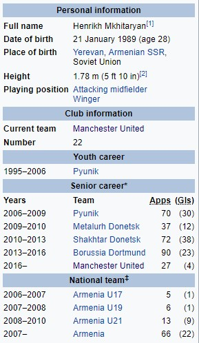

Хенрик Мкихтаријан
Хенрик Мкихтаријан(рођен 21. јануара 1989.) је професионални фудбалер Јерменије који игра као везиста за енглески клуб Манчестер Јунајтед, као и капитен репрезентације Јерменије. Мкихтаријан је најбољи стрелац Јерменије, који је постигао 22 голова на 66 међународних мечева од свог дебитовања у јануару 2007. године, укључујући њихов први хат-трик. Његови претходни клубови укључују Пиуник, гдје је пролазио кроз омладински систем, Металург Доњецк, Шахтјор Доњецк и Борусију Дортмунд. Мхитариан је изабран за Јерменског фудбалера године седам пута (сваке године од 2009, изузев 2010. године). У 2012. години, од стране навијача изабран је за најбољег играча Шахтјора у сезони 2011-12, а проглашен је за ногометаша године у Украјини. Мкхитариан је проглашен од стране ЦИС-а за фудбалера године за 2012., што га чини првим јерменским фудбалером проглашен за најбољег играча из пост-совјетских земаља. Поново је добио награду за 2013. годину. Мкихтаријан је познат по два надимка, као што су Хено (у Јерменији) и Мики (у Европи).
